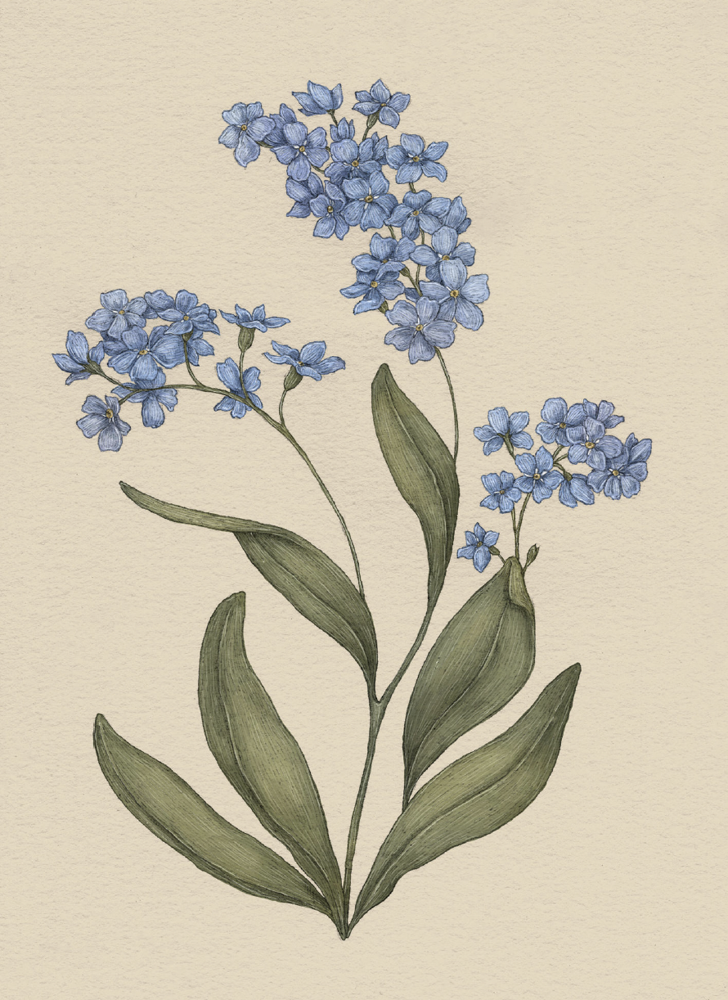

Plate FORGET-ME-NOT
The Language of Flowers
Forget-me-not Study

Forget-me-not
Myosotis
Definition: A flower associated in floriography with remembrance and the plea to not be forgotten.
Meaning
Forget me not
Origin
The forget-me-not's name and meaning originate with a German folktale about a young couple in love.
While walking along a river, the bride-to-be stops to admire a cluster of beautiful blue flowers.
Her lover attempts to pick the flowers for her, but he falls into the swiftly flowing river. He
throws the flowers to her as the river carries him away, calling out to her, "Forget me not!"
Pair With
- Zinnia for a friend who is moving away
- Larkspur to say "remember the good times"
- Oak for a long-distance relationship